Introduction to Intelligent Networked System
(Press ? for help, n and p for next and previous slide; usage hints)
Intelligent Networked System
What is Intelligent Networked System
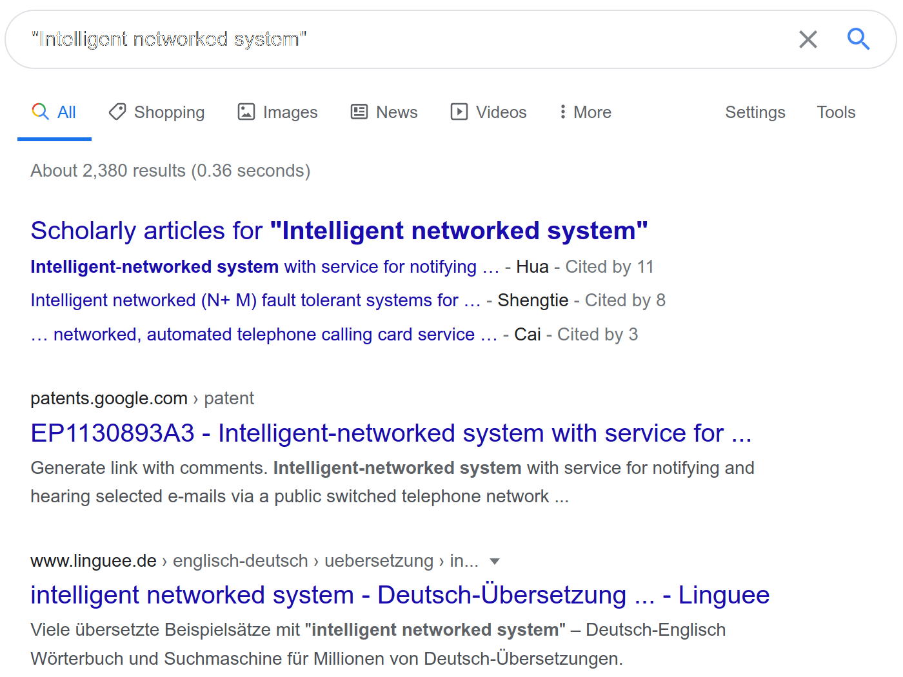
Search Results for Intelligent Networked System
What is Intelligent Networked System
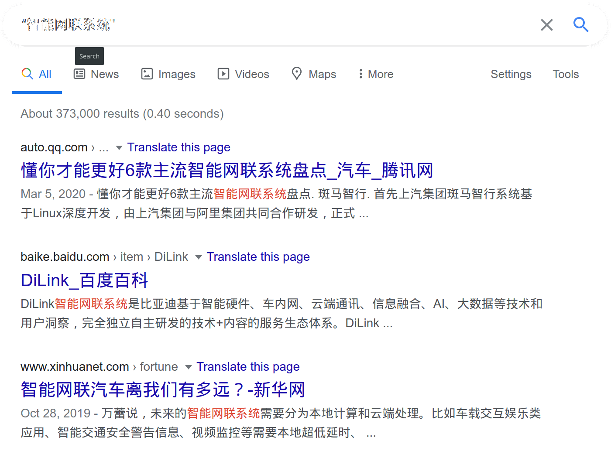
Search Results for 智能网联系统
Wireless Sensor Networks
Wireless sensor network (WSN) refers to a group of spatially dispersed and dedicated sensors for monitoring and recording the physical conditions of the environment and organizing the collected data at a central location.
- 1997: Smart Dust Project proposed by researchers from UCB
Pros and Cons of Going Wireless
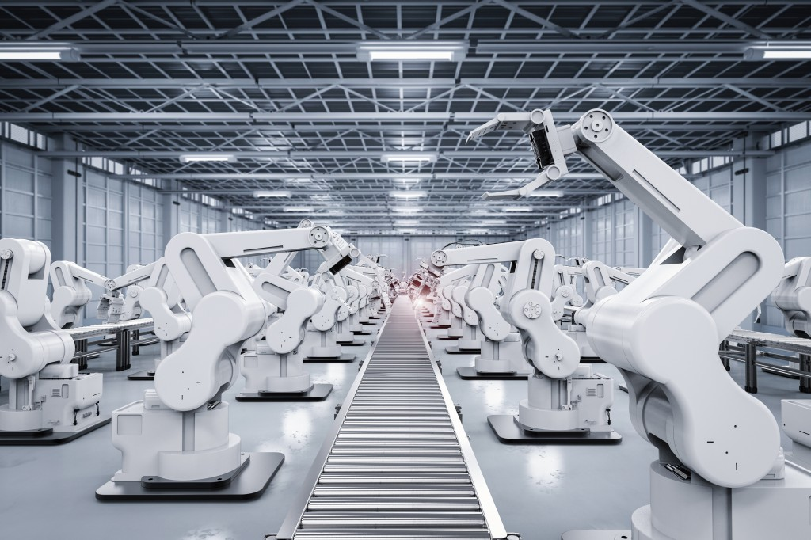
Pros and Cons of Going Wireless
Pros:
- Increased Mobility
- Scalability
- Lower Cost
- Ease of Installation
- Wider Reach
Cons:
- Communication Issues:
- Packet drop
- Low throughput
- High latency
- Energy Constraints
Vision of Wireless Sensor Networks
- Building Monitoring
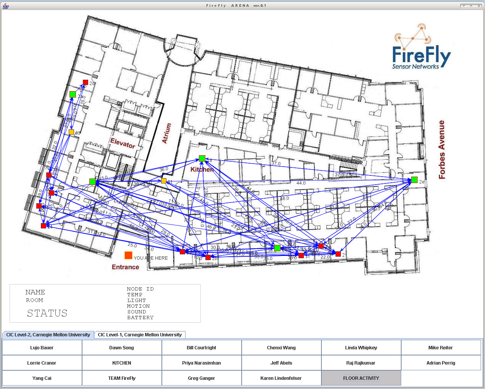
- Mine Monitoring
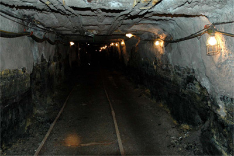
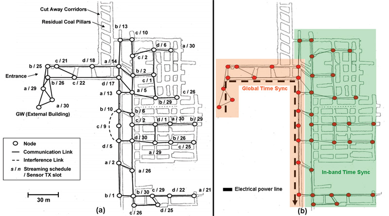
- Typical Sensor Nodes:
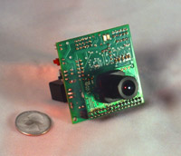
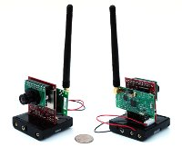
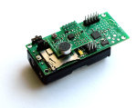
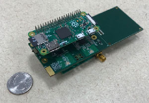
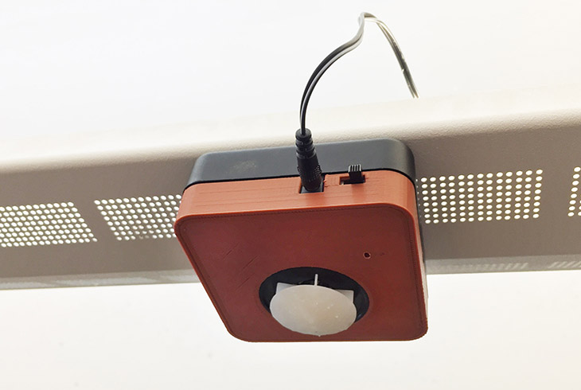
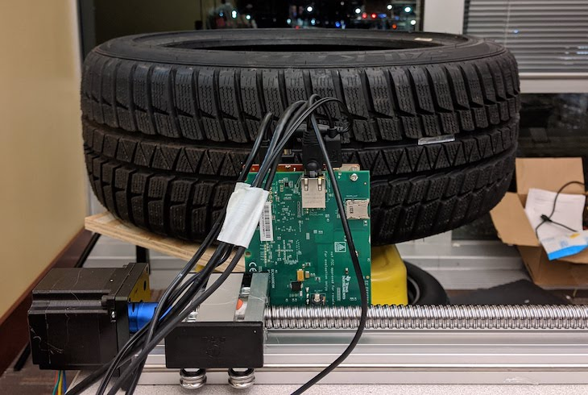
History of Wireless Sensor Networks
| Gen 1 (80s-90s) | Gen 2 (1999-2006) | Gen 3 (2010 and beyond) | |
| Size | Large shoe-box | Pack of cards | Dust particle |
| Weight | Kilograms | Grams | Negligible |
| Node | Separate sensing/comm | Semi-integrated | Fully integrated |
| Topology | Point-to-point, star | Client-server, peer-to-peer | P2P |
| Energy | Large batteries | AA batteries | Energy Harvesting |
| Life Time | hours/days/weeks | days to months | years |
| Deployment | Vehicle-placed, air drop | Hand placed | Embedded, “scattered” leave behind |
Internet of Things
The Internet of things (IoT) describes the network of physical objects, i.e., things, such as vehicles, buildings, and other items, that are embedded with sensors, software, and other technologies for the purpose of connecting and exchanging data with other devices and systems over the Internet.
In the real world, things matter more than ideas.
[Ashton], “That ‘internet of things’ thing”, 2009
Internet of Things Paradigm
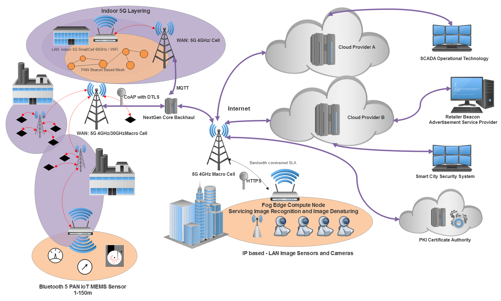
Internet of Things Paradigm, [IoT2018]
Early History of Internet of Things
- 1973: Mario W. Cardullo receives the patent for first RFID tag
- 1982: Carnegie Mellon internet-connected soda machine
1991: HP introduces HP LaserJet IIISi: First Ethernet-connected network printer
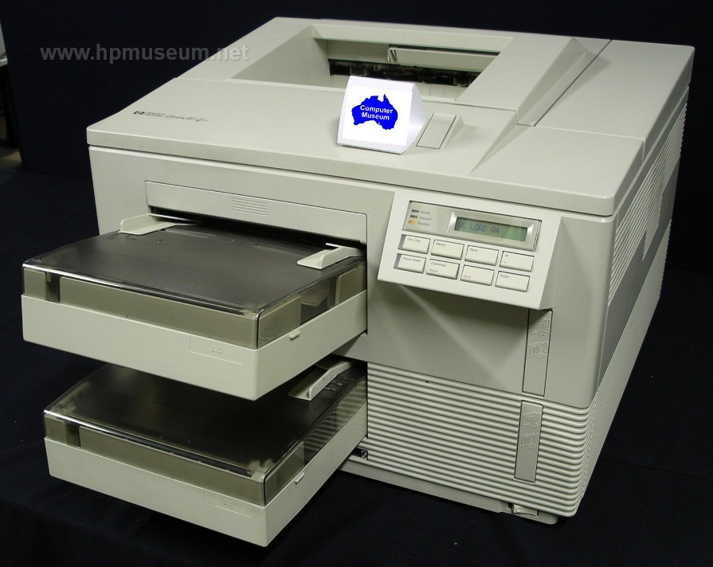
1993: Internet-connected coffee pot at University of Cambridge (First Networked Camera)
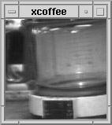
- 1999: The term Internet of Things was coined
- 2005: United Nation’s International Telecommunications Union report predicting the rise of IoT for the first time
Trends
- Google Search Trends
- The Hype Cycle
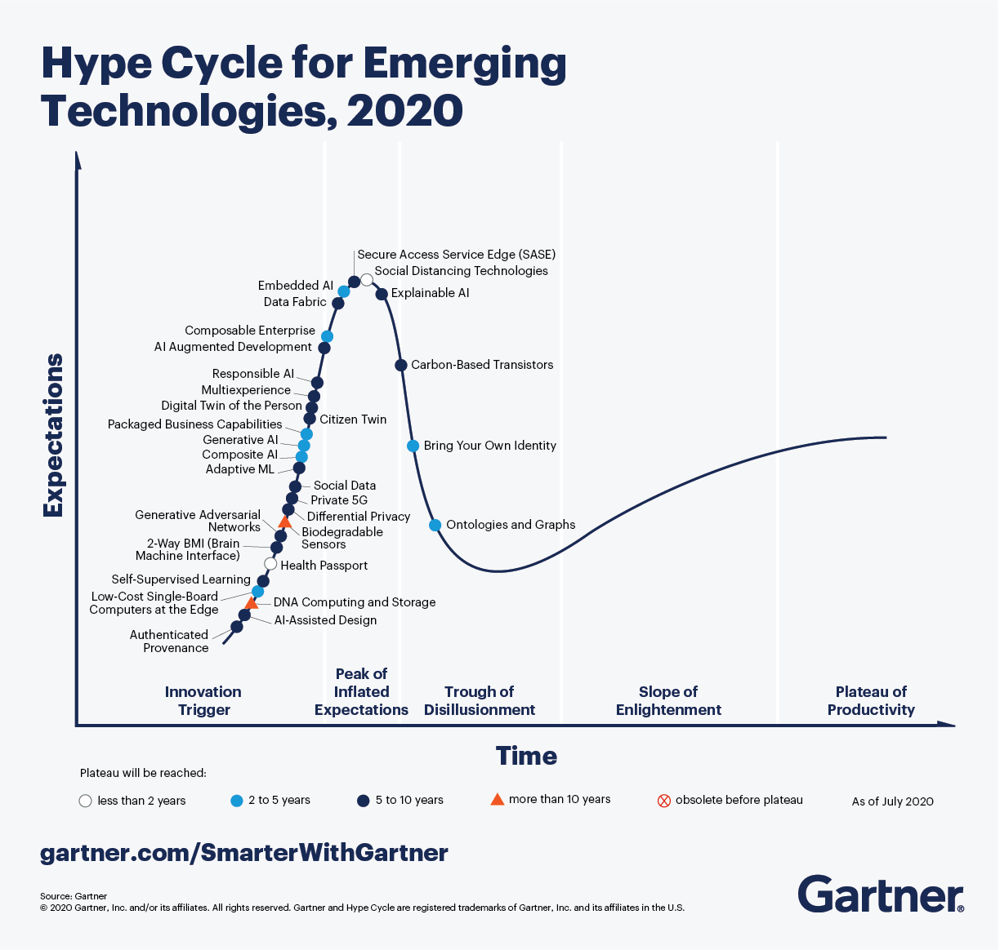
Gartner Hype Cycle
Metcalfe’s law
The value of a network goes up as the square of the number of users.
Cyber-Physical Systems
CPSs refer to the next generation of engineered systems that require tight integration of computing, communication, and control technologies to achieve stability, performance, reliability, robustness, and efficiency in dealing with physical systems of many application domains.
[Kumar], Proceedings of the IEEE, 2012
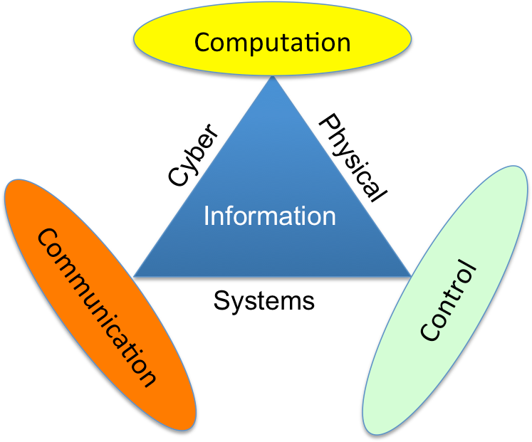
Cyber-Physical System
Convergence of Computation and Control
1948: The term “Cybernetics” was coined by Norbert Wiener.

- 1970s: Real time system
- 1990s: Hybrid system
- 2006: The term “Cyber-Physical System” was coined by NSF.

Boeing 787 ZA002 Incident
The P100 panel is one of several power panels in the aft electronics bay. It receives power from the left engine and distributes it to an array of systems. In the event of a failure of the P100 panel, backup power sources – including power from the right engine, the Ram Air Turbine, the auxiliary power unit or the battery – are designed to automatically engage to ensure that those systems needed for continued safe operation of the airplane are powered.
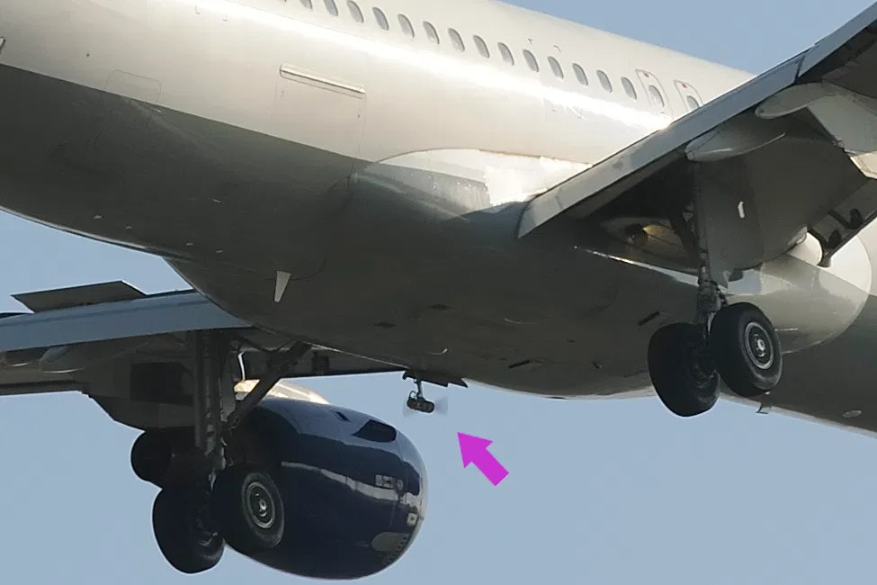
Convergence of Communication and Control
- 1971: ALOHAnet, first public wireless packet data network
- 1997: IEEE 802.11 (Wifi) was introduced
- 2000: Panel on Future Directions in Control, Dynamics, and Systems, Control in an Information Rich World:
Networks of sensory or actuator nodes with computational capabilities, connected wirelessly or by wires, can form an orchestra which controls our physical environment.
Convergence of Communication and Control
Intelligent Networked System
30 Internet of Things 30 Informatization 20 Data Analytics 15 Cyber-Physical System 15 Wireless Sensor Network 15 Smart Algorithms 12 Cloud Computing 12 Embedded Devices 12 5G 10 RFID 10 LPWAN 10 802.15 10 TLS 10 Linux 8 RTOS 8 Python 8 C/C++ 8 Java 5 MQTT 5 CoAP 5 Bluetooth 5 Zigbee 5 Wifi 5 OFDMA 4 Mesh
Applications
Manufacturing
- Use cases:
- Preventative maintenance on new and pre-existing factory machinery
- Throughput increase through real-time demand
- Energy savings
- Safety systems such as thermal sensing, pressure sensing, and gas leaks
- Factory floor expert systems
- Goal: Improving yield, uptime, real-time response, and systems safety.
- Challenges: Real-time decision, Legacy system, Security
Consumer
- Use cases:
- Smart home gadgetry: Smart irrigation, smart garage doors, smart locks, smart lights, smart thermostats, and smart security.
- Wearables: Health and movement trackers, smart clothing/wearables.
- Pets: Pet location systems, smart dog doors.
- Goal: Improving quality of life
- Constraints: bifurcation of standards
Retailing
- Use cases:
- Beaconing, such as proximity sensing customers, traffic patterns, and inter-arrival times as marketing analytics.
- Beaconing systems within entertainment venues, conferences, concerts, amusement parks, and museums.
- Targeted advertising, such as locating known or potential customers by proximity and providing sales information.
- Asset tracking, such as inventory control, loss control, and supply chain optimizations.
- Apply predictive analytics to food supply.
- Digital signage within retail, hospitality, or citywide.
- Goal: Lowering sales costs and Improving customer experience
- Constraints: Cost/benefit ratio
Healthcare
- Use cases:
- In-home patient care
- Learning models of predictive and preventative healthcare
- Dementia and elderly care and tracking
- Hospital equipment and supply asset tracking
- Pharmaceutical tracking and security
- Remote field medicine
- Drug research
- Patient fall indicators
- Goal: Improving the quality of life and reduce health costs
- Constraints: Government Regulation, Reliability, Zero downtime, Privacy
Energy
- Use cases:
- Oil rig analysis of thousands of sensors and data points for efficiency gains
- Remote solar panel monitoring and maintenance
- Hazardous analysis of nuclear facilities
- Smart electric meters in a citywide deployment to monitor energy usage and demand
- Real-time blade adjustments as a function of weather on remote wind turbines
- Constraints: Real-time responsiveness, extreme environment
Transportation
- Use cases:
- Fleet tracking and location awareness
- Railcar identification and tracking
- Asset and package tracking within fleets
- Preventative maintenance of vehicles on the road
- Goal: Safety, Minimize downtime
- Challenges: Mobility, Spatial data
Smart City
- Use cases:
- Pollution control and regulatory analysis through environmental sensing
- Microclimate weather predictions using citywide sensor networks
- Efficiency gains and improved costs through waste management service on demand
- Improved traffic flow and fuel economy through smart traffic light control and patterning
- Energy efficiency of city lighting on demand
- Smart snow plowing based on real-time road demand, weather conditions, and nearby plows
- Smart irrigation of parks and public spaces, depending on weather and current usage
- Smart cameras to watch for crime and real-time automated AMBER Alerts
- Smart parking lots to automatically find best space parking on demand
- Bridge, street, and infrastructure wear and usage monitors to improve longevity and service
- Challenges: Scale (More is different)
Technology Stack
Enabling Technology
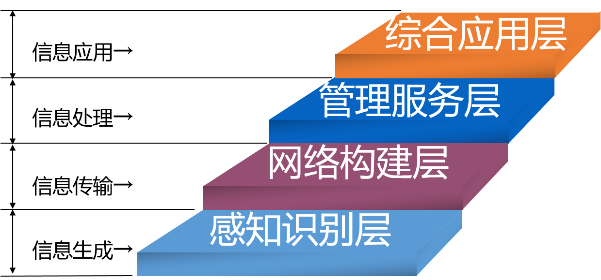
Enabling Technology
Four Layer Model
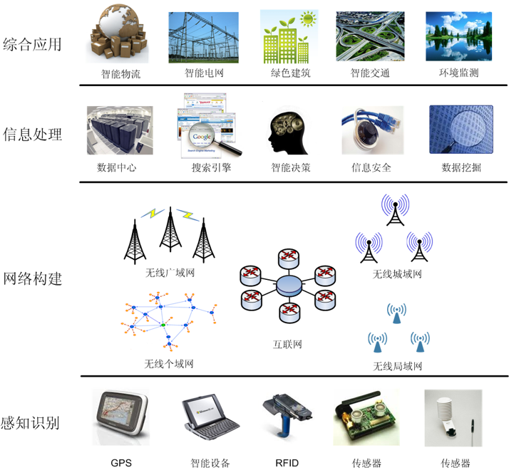
Four-Layer Model of Internet of Things
Enabling Technology
- Node Level:
- Embedded systems: Sensors, RFIDs
- Embedded operating systems: Linux, Windows IoT, Real-time OS
- Energy-harvesting
- Micro-Electro-Mechanical Systems (MEMs).
- Network Level:
- Wireless communication: Cellular, LPWAN, IEEE 802.15
- Ad-Hoc network
- MQTT, CoAP
- Internet Security
- Service Level:
- Clouding computing
- Big data, Data analytics, Machine learning
- Clock Synchronization
- Localization
- Applications
The Many-Sidedness of Internet of Things & CPS
Takeaway from the course
- We CANNOT cover everything in details in this course.
- Look at the big picture:
- What are we trying to solve?
- What are the key considerations?
- What is the fundamental limit?
- How to effectively trade off between X and Y based on specific application?
Example: Physical Layer
- What are we trying to solve?
- Transmitting raw bits via a physical medium
- What are the key considerations?
- Throughput, Range, Energy consumption
- Other considerations: Latency, Mobility, Cost
- What is the fundamental limit?
- The Shannon Limit
- Free space path loss formula
- How to effectively trade off between X and Y based on specific application?
- Surveillance camera: Wifi, 4G/5G, Wired
- Environmental monitoring: LoRa, NBIoT
- Smart home: Zigbee, Bluetooth
Course Information
Course Information
- Pre-requisites:
- 计算机语言与程序设计
- 计算机网络与应用
- Things that you will need for the lab/project:
- Raspberry Pi: Most popular single board computer
- GNU/Linux: Most popular OS for IoT
- Using SSH to connect to RPi
- Writing short Python code (<100 lines)
- Version control and collaborating with your teammate using Git
Course Instructors
- Mo, Yilin
- Office: FIT Building 3-613
- Office Hour: Wednesday 14:00-17:00
- Phone: 62792438
- Email: ylmo@tsinghua.edu.cn
- Pei, Xin
- Office: Central Main Building 809
- Office Hour: Wednesday 14:00-17:00
- Phone: 62795043
- Email: peixin@tsinghua.edu.cn
Teaching Assistant
- Lu, Yiwen
- Office: FIT Building 3-623
- Office Hour: Friday 14:00-17:00
- Phone: 62772430
- Email: luyw20n@mails.tsinghua.edu.cn
Tentative Lecture Schedule
- Lecturer: Mo, Yilin
| Lecture # | Date | Topics |
| 1 | 9/18 | Introduction, Sensor OS |
| 2 | 9/25 | Sensors, Actuators, Energy Harvesting |
| 3 | 9/27 | Lab 1: Raspberry Pi platform |
| 4 | 10/9 | Physical Layer |
| 5 | 10/16 | MAC Layer |
| 6 | 10/23 | Routing |
| 7 | 10/30 | Lab 2: Networking |
| 8 | 11/6 | Lab 3: Wireless Mesh Network |
| 9 | 11/13 | Security |
Tentative Lecture Schedule
- Lecturer: Pei, Xin
| Lecture # | Date | Topics |
| 10 | 11/20 | Clock Synchronization |
| 11 | 11/27 | Localization |
| 12 | 12/4 | Big Data, Cloud Computing |
| 13 | 12/11 | Smart Transportation System |
| 14 | 12/18 | Smart Cities |
| 15 | 12/25 | Lab 4: Project |
| 16 | 1/1 | Project Demonstration |
Grading Criteria
- Quizzes (4 total): 20%
- Lab Assignment: 20%
- Final Project: 60%
- Demo: 20%
- Report: 40%
- Pass/Fail
Quizzes
- Four in-class, closed-book quizzes
- Spread throughout the semester
- Announcement will be one week ahead of time (with reading assignment)
- The questions will be based on the reading assignment.
Lab Assignments
- Three lab assignments at the first half of the semester
- Location: Central Main Building 510
- Goal: Get familiar with Raspberry Pi and networking protocols
- Installing Raspberry Pi OS, SSH, Light Sensor, LED
- Distributed “Whack-a-Mole”
- Wireless Mesh Network
Project
- Carried out in teams of 3 students.
- The code should be hosted on Tsinghua Gitlab Repo
- We will review everyone’s contribution to the Repo
- Each group will be given 3 Raspberry Pis, Sensors + LED, SD cards and other accessories
- Take good care of the equipment
- Buying additional hardware
- Write a proposal with a budget (Typically < ¥1,000)
- We will review the proposal and buy the HW
Project
- A sample project list will be presented later
- Example:
- Developing an ad-hoc sensor network of 5+ nodes via Wifi and a front-end to show the sensor readings
- Completing the tasks in Lab 2 while running RPI on bare metal
- …
- You are encourage to propose your own project and discuss with us
- Combining it with your final year project!
- Grading Criteria:
- 2/3: Final Report
- 1/3: Demonstration